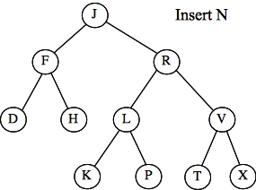
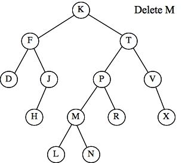
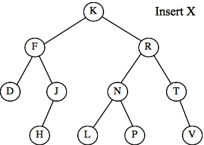
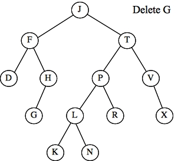
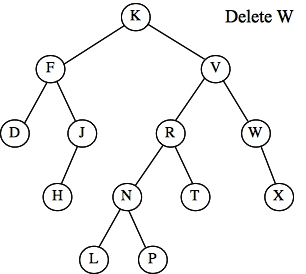
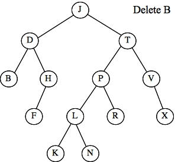

2013 CS140 Final Exam Page Three
Question 7 - AVL Trees
Below, I give you a AVL tree and an action. I also have fifteen multiple choice
answers. For each tree and action, tell me the letter of the AVL tree that results when
the action is performed on the given AVL tree.
| Tree 1  |
Tree 2  |
Tree 3  |
| Tree 4  |
Tree 5  |
Tree 6  |